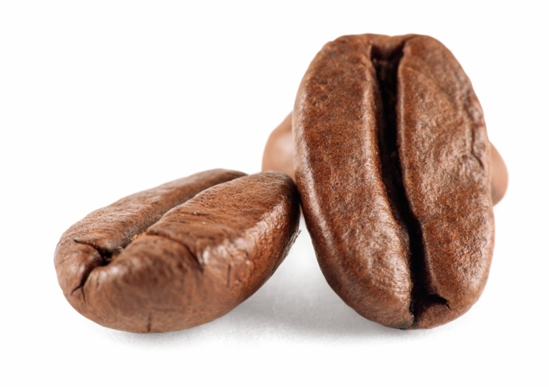
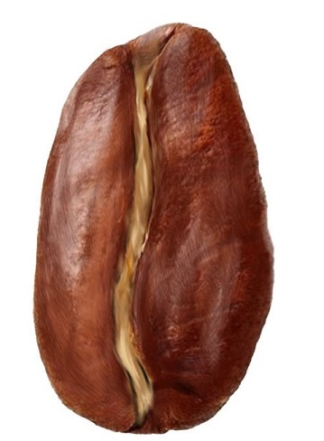

|
Procedente del árbol del cafeto, una planta de la
familia de las Rubiaceae Originario de Etiopía es, a día de hoy, el más
cultivado en el mundo.El café arábica tiene una gran riqueza
en aromas y sabores, que son los que definen cada variedad del
café. Su sabor es suave, con notas frescas, frutales y florales y
con un toque de acidez equilibrado.
|
 |
También conocido como Coffea canephora. Procede de la República
Democrática del Congo.El sabor del café robusta es más bien amargo
y se combina con matices de frutos secos y madera. Asimismo,
su textura es más áspera y cremosa, lo que lo hace poco atractivo
para los gustos más finos e idónea para la elaboración de los
cafés espressos. |
|  |
Se origina en la frontera entre Chad, Nigeria, Níger y Camerún,
a las orillas del lago Chad, aunque también se cultiva en Indonesia
y Filipinas. Tiene un gusto muy potente, al que la mayoría de los
bebedores de café no están habituados. Sin embargo, si lo tuyo es el
café fuerte, ¡quizás quieras darle una oportunidad! |
 |
Es nativo de los alrededores de Monrovia en Liberia y tiene un
sabor muy particular que es apreciado, sobre todo, en los países escandinavos.
Este café es fuerte y vigoroso y de igual forma es su planta. El arbusto de café
liberiano presenta una fuerte resistencia del arbusto de café libérica frente a la roya,
enfermedad que afecta a los árboles y produce manchas en las hojas. |